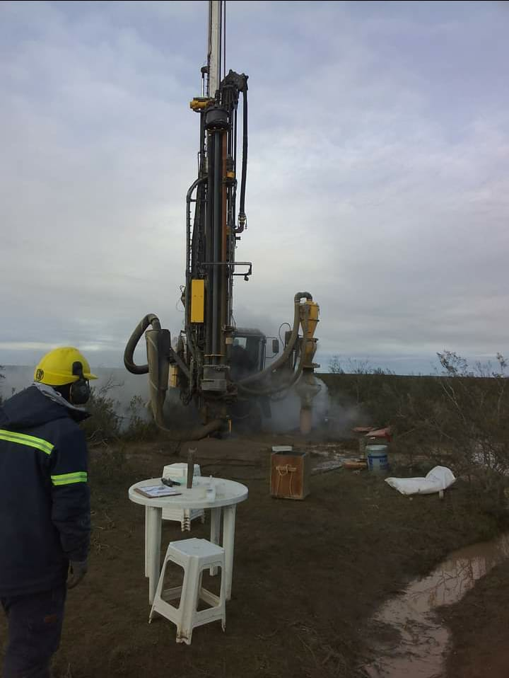

PERFORACIONES EXPLORATORIAS DE URANIO EN VALCHETA

AMARILLO GRANDE: La extracción de uranio del subsuelo, significa introducir en la biosfera productos radiactivos que permanecían hasta entonces retenidos en la corteza terrestre de forma segura, contribuyendo al envenenamiento radiactivo de los ecosistemas. La multinacional Blue Sky Uranium publicita 500.000 hectáreas de propiedades mineras en la Patagonia Argentina. Su principal proyecto se denomina Amarillo Grande, en la provincia de Río Negro. Las perforaciones exploratorias que realiza cerca de Valcheta suponen un peligro para los acuíferos y las aguas superficiales, y pueden afectar la salud de los habitantes de la zona.